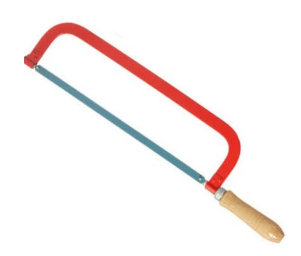

Process involved is revealing the microstructure of metallic materials
List of facilities required for physical metallurgy laboratory
- Hacksaw
- Abrasive wheel cutters
- High speed saw
- Low speed saw
- Mounting press
- Emery paper
- Grinder/grinding machines
- Water dispenser and polishing cloth
- Etching chemicals
- Optical microscope /Electron microscope
A little more info on metallographic equipment's / accessories and their suppliers
Some specifications of key Equipment
Plastic or Metal Clips and Belt Grinder
Plastic or Metal Clips
They are required for mounting samples firmly.
The primary reason for mounting samples is simply to facilitate ease in handling. Sharp corners are eliminated, thereby increasing the safety to the metallographer and avoiding damage to the papers and cloths used for preparation.
Standard mounts usually measure 1, 1.1/4 or 1.1/2 inch in diameter. The mount thickness should be about one half the mount diameter. Thin mounts are harder to handle and very thick mounts tend to rock during preparation.
Typical Dimensions of a Mount:
Characteristics of Mounting:
It should have sufficient hardness and it should, ideally, have grinding and polishing characteristics similar to the specimen.
It should be capable of penetrating small pores, crevices, convolutions and other surface irregularities.
It should exhibit good adhesion to the sample surface.
It should resist physical distortion due to the heat generated during grinding, polishing, etching and washing.
The mount should be chemically inert to the variety of lubricants, solvents and etchants which are used.
It should not be prone to formation of defects in the cured mount, such as cracks or voids.
No health hazards and be readily available at a reasonable cost.
Depending on the type of the sample, the mount material may need to be either electrically conductive or insulating.
Belt Grinder:
Background: Grinding is the most important operation in specimen preparation.
Why? During grinding, the operator has the opportunity of minimizing mechanical surface damage, which can be removed by subsequent polishing operations. Even if sectioning is done in a careless manner resulting into a severely damaged surface, the damage can be eliminated by prolonged grinding.
How? Grinding is accomplished by abrading the specimen surface through a sequence of operations using progressively finer abrasive grits.
Grit sizes ranging from 60 mesh to 150 mesh are usually regarded as coarse abrasives, and grit sizes ranging from 180 mesh to 600 mesh as fine abrasives.
Grinding should commence with the coarse grit size for making initial flat surface and removing the effects of sectioning. Hack-sawed, band-sawed, or other rough surfaces usually require abrasive grit sizes in the range of 80 to 150 mesh. Belt grinding is a versatile process suitable for all kinds of different applications. There are three different applications of the belt grinding technology:
Finishing: surface roughness, removal of micro burrs, cosmetic finishes, polishing
Deburring: burr removal, edge breaking
Stock removal: high stock removal, cleaning (e.g. of corrosion), eliminating mill or tool marks, dimensioning
Disadvantages: However, prolonged grinding should be avoided since it might lead to excess heating or surface damage.
Chemicals for Etching: Various etchants with different compositions are used to reveal the microstructures:

Use petri dishes or other suitable containers with loose covers to prevent excessive evaporation of the solvent. You’ll also require alcohol and running water to rinse the specimen and a stream of warm air for drying.
Precautions:
Use gloves (latex or nitrile) and apron. The etchant is capable of staining your clothes.
Don’t get the etchant onto your skin or eyes.
Optical/ Electron Microscope:
Optical/ light microscopy is a basic tool for microstructural
examination of materials including metals, ceramics, and polymers.
• Principle includes image formation, magnification and resolution
This type of microscope differs from other types of microscopes in the method of specimen illumination. Since metals are opaque substances, they must be illuminated by frontal lighting, therefore the source of light is located within the microscope tube.
It is a specialized microscope designed for looking at cross-section of metal mounts. These microscopes employ high-resolution objective lenses with very short working distances.
click here for more reference
Saws and Cutter
HACKSAW
A hacksaw is a hand-powered, small-toothed saw used for cutting metal pipes, rods, brackets, etc. Hacksaws can also cut through plastic. The hacksaw has a U Shaped frame and a handle at one end.

ABBRASIVE WHEEL CUTTERS
Abrasive wheels have replaced steel saws in many places.Thin, abrasive cutoff wheels are capable of sawing through nearly every material known, at rates faster than those of metal saws, while generating less heat and producing a better cut surface. Some space-age metals, because of their hardnesses, can be cut only with abrasive wheels. Granite, marble, slate, and various building blocks are cut to size with diamond abrasive wheels. Grooves for expansion joints and for the reduction of wet-weather skidding accidents are cut in concrete runways and highways by blades with a metal centre, onto which are brazed metal segments with the diamond abrasive mixed throughout.


HIGH SPEED & LOW SPEED SAW
What is High speed saw ?
High-speed saw, are a specialized class of tool steels that were named primarily for their ability to machine and cut materials at high speeds (high hot hardness).
Theory :
It is often used in power-saw blades and drill bits. High-speed steel is superior to the older high-carbon steel tools in that it can withstand higher temperatures without losing its temper (hardness). High-speed steels are complex iron-base alloys of carbon, chromium, vanadium, molybdenum, or tungsten, or combinations there of. To achieve good cutting performance from HSS, an appropriate hardening response must be provided in heat treatment.
Central to the performance of high-speed steels is the hardening response achieved during the heat treatment process. Alloying elements are introduced in quantities given by the intended application and by their function in the heat treatment process, whether to increase the solidus temperature or inhibit the growth of secondary hardening precipitates, enabling higher operating temperature.
Specifications:
Name High speed saw
Density 78160kg/m3
Ultimate Tensile Strength 1200Mpa
Yield’s strength 1000Mpa
Young’s modulus of elasticity 200Gpa
Brinell Hardness 720BHN
Melting point 1430K
Thermal Conductivity 41W/mK
Heat capacity 470 J/gK

What is Low Speed saw ?
Low speed saw offer convient ,precision cutting for a wide variety of materias in the laboratory ,including mineralogicalsections,embeddedtissue,teeth,bone,semiconductors and other embedded devices.
Theory :
The saw is fitted with a 100 mm diameter wheek as standard and wheel rotation speed can be varied from 50 to 400rpm . An end point device with associated indicator can be set to terminate the cutting process at a pre-defined depth.A wide range of speciemen holders is avaialble to suit different specimen shapes.Diamond wafering blades are suitable for cutting most hard materials .Wafering blades are also available that can be used for cutting softer ferrous alloys and silicon carbide wheels for non ferrous alloys.


 click here for more references
click here for more references
Polishing and types of polishing
POLISHING
Polishing involves the use of abrasives, suspended in a water solution, on a cloth-covered electrically powered wheel. Diamond abrasives provide the best, and most expensive, compounds utilized in polishing standard sized aluminum oxide powders are applied for general use purposes. Following the final 600 grit
fine-grinding stage, the sample MUST be washed and carefully dried before proceeding to the first polishing stage! At the polishing stages, even hard dust particles in the air which settles on the polishing cloth can cause unwanted scratching of the specimen! Careful washing of the specimen and the operator's hands must be carried out prior to each stage of polishing! Beginning with 25-micron suspended aluminum oxide particles
(suspended in water) on a Nylon-cloth, the final fine-grinding surface layer resulting from the previous grinding procedure should be completely removed with a rotation rate of 150-200 rpm.
ROUGH POLISHING
•Usually done using diamond abrasive because of its multiple smaller cutting edges which produce minimal surface damage.
•Purpose of this process is to remove the damage caused by cutting and planar grinding.
•If done right,rough polishing serves as a reason to spend minimal amount of time.
FINAL POLISHING
Final polishing is used to remove the surface damage,and not the damage caused by cutting and/or planar grinding.If the damage from the other steps is not removed by completely,the rough polishing should be repeated before moving on to the final polishing step.This is the final step in producing a surface that is flat,scratch free and mirror-like in appearance.Such surface is necessary for subsequent accurate metallographic interpretation,both qualitative and quantitative.The polishing technique used should not introduce extraneous structure,such as disturbed metal,pitting,dragging out of inclusions and staining.
DIFFERENT TYPES OF POLISHING ABRASIVE PAPERS
1)calcite(calcium carbonate)
2)Emery(impure corundum)
3)Diamond dust(synthetic diamonds are used extensively)
ETCHING
•Etching is done to optically enhance microstructural features of material.
Microscopic examination of a properly polished, unetched specimen will reveal only a few structural features such as inclusions and cracks or other physical imperfections. Etching is used to highlight, and sometimes identify,microstructural features or phases present. Even in a carefully prepared sample, a surface layer of disturbed metal, resulting from the final polishing stage, is always present and must be removed. Etchants are usually dilute acid or dilute alkalis in water, alcohol or some other solvent. Etching occurs when the acid or base is placed on
the specimen surface because of the difference in rate of attack of the various phases present and their orientation. The etching process is usually accomplished by merely applying the appropriate solution to the specimen surface for several seconds to several minutes.
Nital, a Nitric Acid - Alcohol mixture, is the etchant commonly utilized with common irons and steels. Nital is dripped onto the specimen using an eye-dropper or cotton swab. Ten seconds to one minute is usually sufficient for proper etching depending on sample and nital concentration. The sample is immediately washed under running water, rinsed with alcohol and dried in an air blast. Do not touch, wipe or swab the specimen following etching; dry off the rinsing alcohol on the specimen with the air blast and then move on to the microscopic examination stage!
Types of grinding and Emery papers
ROUGH GRINDING:
1) For Rough grinding, we are using Grinding Wheels & Belt Grinder.
2) The smoothing of surfaces (levelling) can be achieved by rough grinding.
3) This technique can be best compared to the coarse filing of surfaces since a lot of material is removed in the process.
4) Rough grinding machines are generally used to remove a large amount of material from the work piece.
GRINDING WHEEL:
1) A grinding wheel is a wheel used for grinding.
2) Grinding wheels are composed of abrasive compounds and are used for various grindings and abrasive machining operations.
3) Such wheels are used in grinding machines.

BELT GRINDER:
1)Belt grinders are the most popular size among professional knife makers.
2) The Grinding machines are compact and have a wide range of available accessories, such as surface grinding attachments for a smooth finish.
3) Belt grinder's are made of zirconium oxide (zirconia).
4) The belt grinder runs 3000 surface feet per minute.

FINE GRINDING:
1) For Fine grinding, we are using "Emery papers".
2) Fine grinding is a batch mode abrasive machining process that combines the speed and aggressiveness of super abrasive wheels with accuracy of lapping kinematics to produce flat and parallel work piece surfaces.
3) High precision surface grinding or fine grinding is a super finishing process performed by removing material from two surfaces.
EMERY PAPERS:
Emery paper is a type of abrasive paper or sandpaper, that can be used to abrade (remove material from) surfaces or mechanically finish a surface. Operations include deburring, polishing, paint removal, corrosion removal, sizing, etc. This is accomplished by moving the abrasive-coated paper, with some pressure, against the object being processed. Abrasion may be performed by hand, electrically powered, or air powered equipment.
 1) These are used in Fine grinding process.
2) Mainly, it is useful to polish the wooden surfaces.
3) Emery paper is a type of abrasive paper, that can be used to remove material from surfaces or mechanically finish a surface..
4) Operations include deburring, polishing, paint removal, corrosion removal, sizing etc....
5) Emery paper is a type of paper that can be used for sanding down hard and rough surfaces.
1) These are used in Fine grinding process.
2) Mainly, it is useful to polish the wooden surfaces.
3) Emery paper is a type of abrasive paper, that can be used to remove material from surfaces or mechanically finish a surface..
4) Operations include deburring, polishing, paint removal, corrosion removal, sizing etc....
5) Emery paper is a type of paper that can be used for sanding down hard and rough surfaces.